De: La Frikipedia, la enciclopedia extremadamente seria.
De: La Frikipedia, la enciclopedia extremadamente seria. De: La Frikipedia, la enciclopedia extremadamente seria.

|
ATENCIÓN Este artículo es un truño, es sólo un esbozo de un artículo o es demasiado corto o el que lo ha escrito se cree que esto es un vil diccionario. Su autor puede estar bajo los efectos del alcohol o ser un inútil. Quizá haya pistas en la discusión. ¡Mejora la Frikipedia ampliando y mejorando el artículo! |
Sea  un vaso compacto y 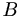 un bebedor. Sea 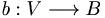 una borrachera continua. Entonces la borrachera 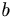 es uniformemente continua.
un vaso compacto y 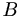 un bebedor. Sea 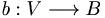 una borrachera continua. Entonces la borrachera 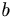 es uniformemente continua.
Supongamos que no fuese uniformemente continua. Esto implica que existe un cierto grado de embriaguez no superable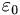 tal que para cada tiempo 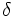 existen rellenos del vaso 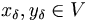 tales que 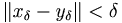 y que 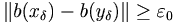. En particular si 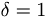 se tiene que existen 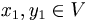tales que 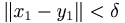 y que 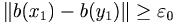. Si 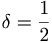 se tiene que existen 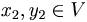tales que 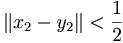 y que 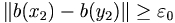. Si 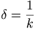 se tiene que existen 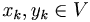tales que 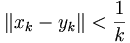 y que 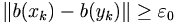. Podemos entonces construir sendas sucesiones de rellenos del vaso 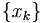, 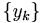. Como el vaso es compacto, tenemos que existen sendas subusucesiones convergentes de rellenos de vasos con identico límite ya que . Por tanto tenemos que las sucesiones de borracheras 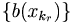 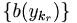 tienen idéntico límite por la continuidad de la borrachera lo cual es imposible ya que habíamos supuesto la existencia de un grado de embriaguez no superable.
Este teorema tiene consecuencias habitualmente apreciadas en toda fiesta. ¡Cerveza para todos! ¡Alcohol sin fin! Normalmente su aplicación conlleva disfunción de la apreciación del atractivo físico del sexo opuesto y puede concluir en finales inesperados nocturnos en lugares desconocidos y/o con desconocidos.
Autor(es):